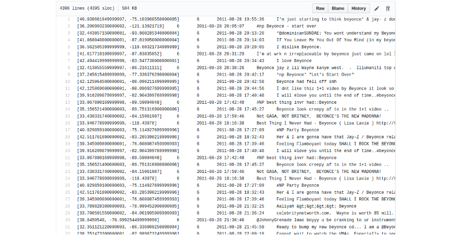

- Introdução
- Dados
- Big Data
- Coleta de Dados
- Análise e Mineração de Dados
- Informação
- Conhecimento
- Relevância para as organizações
Gabriel D'Luca, Vitor Lima
(IF973) Fundamentos de Sistemas de Informação
agosto – 2017
Roteiro
Introdução

Introdução
- São observações documentadas ou resultados de uma medição
- Empresas já contratavam times de estatísticos e atuários desde o início
do século passado - Hoje, quase todas as instituições coletam dados sobre seus processos e usuários
Introdução
- Ao contrário dos dados, é composta por elementos mais palpáveis
Dados brutos- Passam por diversas manipulações
Introdução

Introdução

Introdução
Dilúvio de dados
- Houve uma evolução drástica da infraestrutura para armanezagem e coleta de dados nos últimos 15 anos
- Praticamente todas as instituições coletam dados sobre seus processos e clientes
- Estima-se que 90% de todos os dados disponíveis no mundo hoje foram coletados nos últimos 5 anos
A IBM estimou que, em 2012, 2.5 bilhões de gigabytes eram produzidos diariamente, sendo 75% dos dados não estruturados (texto, voz, vídeo e imagens) (Wall, 2014)
Dilúvio de dados
De acordo com um estudo da EMC (Burn-Murdoch, 2012), a quantidade de dados armazenado em 2012 era de 2.8 ZB, com projeções de chegar a 40 ZB em 2020
Contudo, o mesmo estudo revela que, dentre esses mesmos 2.8 ZB de dados, apenas 0.5% foram analisados
Esse contexto mostra a necessidade eminente de usar os dados coletados para extrair informação e conhecimento
Análise de dados
- Análise é o processo de distinção das partes de um todo, com o objetivo de compreendê-lo melhor
- O objetivo da análise deve estar bem definido para que possa realmente auxiliar na tomada de decisões, exploração de oportunidades ou solução de problemas
- A formalização do processo (semi)automatizado de análise de dados tem recebido diferentes nomes ao longo dos anos
- Esse método é largamente utilizado em diversas áreas, principalmente em negócios
Análise de dados
- Empresas já contratavam times de estatísticos e/ou atuários desde o início do século passado
- Os computadores modernos possibilitaram automatizar o cruzamento de dados, o que, consequentemente, permitiu que análises mais profundas fossem realizadas
- Essa análise de dados cada vez mais se tornava um poderoso meio para gerar vantagem competitiva
Vantagens competitivas da análise de dados
- Para exemplificar as vantagens competitivas que a análise sistemática de dados pode trazer, veremos dois casos reais de sua aplicação
- São eles:
- Previsão do consumo de itens em situações de emergência
- Avaliação de crédito
Previsão do consumo de itens em situações de emergência (1/2)
- Em 2004, um ciclone tropical (Furacão Frances) se formou nas águas do Atlântico entre a América do Sul e África, cruzando o Caribe em direção ao Atlântico norte
- Dada a previsão de que o furacão atingiria a Flórida, os executivos do Wal-Mart decidiram testar algumas das suas novas armas para análise de dados (Hays, 2004)
- Usando dados de outro furacão (Charley) que atingira a costa sul dos EUA no mesmo ano, eles queriam prever quais itens seriam consumidos para reforçar o estoque em suas lojas
Previsão do consumo de itens em situações de emergência (2/2)
- Qual o comportamento esperado numa situação como esta?
- Aumento no consumo de água mineral ou de pilhas?
- Aumento no consumo de um determinado DVD?
- A análise dos dados mostrou que há um aumento nas vendas de:

Análise de crédito (1/3)
- Na década de 1990, Richard Fairbank e Nigel Morris revolucionaram a indústria de crédito
- Eles propuseram flexibilizar as linhas de crédito (inicialmente via cartões de crédito) para os clientes de instituições financeiras
- Anteriormente, as taxas e valores dos cartões de crédito eram fixos, e os clientes eram somente aprovados ou reprovados
Análise de crédito (2/3)
- A proposta de Fairbank e Morris era usar as informações dos clientes para prever o risco de inadimplência e ajustar os valores consequentemente
- O problema era que as instituições financeiras não possuíam essa informação
- Após várias tentativas fracassadas, eles convenceram um pequeno banco (Signet Bank) a coletar esses dados para realizar a modelagem
Análise de crédito (3/3)
- A coleta de dados resultou em prejuízos para o banco inicialmente, mas depois as taxas de inadimplência decaíram substancialmente, aumentando o lucro da instituição
- Esse processo foi estendido a outras linhas de crédito e é o padrão das indústria atualmente
- De fato, essa linha de raciocínio de aprimorar a experiência dos usuários é usada pelas gigantes da internet (Amazon, Google, Facebook, etc.)
Data science AJEITA ISSO AQ PELAMOR
- Por causa de casos como esses, empresários do mundo todo viram grandes oportunidades e decidiram investir na coleta de informações
- A popularidade dessa ciencia, agora conhecida como Data Science (Ciencia dos Dados), fez com que várias ferramentas que auxiliam esse processo fossem desenvolvidas
- R e Python são duas das linguagens de programação mais famosas entre o mundo do Data Science
- Vários módulos e bibliotecas foram desenvolvidos nos ultimos anos para aumentar a eficiência dessas linguagens
Mas afinal, o que é informação?

Informação
Informação é a resultante do processamento, manipulação e organização de dados, de tal forma que represente uma modificação no conhecimento do sistema que a recebe
Informação
- A informação deve ser completa, confiável, relevante, veríficavel, acessível e, uma vez que traz vantagem competitiva, segura
- Para melhor uso da informação na tomada de decisão, é importante que ela esteja atualizada, cubra uma area signficativa e seja disponibilizada para as pessoas corretas
Informação
- A informação deve ser completa, confiável, relevante, veríficavel, acessível e, uma vez que traz vantagem competitiva, segura
- Para melhor uso da informação na tomada de decisão, é importante que ela esteja atualizada, cubra uma area signficativa e seja disponibilizada para as pessoas corretas
- Tal disponibilização, no entanto, não deve ser feita de qualquer forma.
Referências
SETZER, V. W. (1999). Dado, Conhecimento, Informação e Competência. Disponível em: www.ime.usp.br/~vwsetzer/datagrama.html.
Acesso em: 20 ago. 2017.
HJORLAND, B. CAPURRO, R. (2007). O conceito de informação. Disponível em: https://www.theguardian.com/news/datablog/2012/
dec/19/big-data-study-digital-universe-global-volume. Acesso em: 20 ago. 2017.
PERRELLI, H. (2017). Sistemas de Informação para Iniciantes: tudo o que você queria saber mas tinha vergonha de perguntar. 1ª ed.